紧凑小亮点补充：六场完整结果对照
这一补充只改少量小点，完整场景未出现大范围变化。周口和两处大庆的选定点温和变弱；济宁的改善很小且存在条带误识别风险；阳泉和永州的选中长条保持原值。
从此前锁定的 30 个残余对象中，按原优先序取前六个不同站点。包含改善很小和没有变化的对象；济宁浅色条带风险例自然排第三，未另挑场。
同一景的五列、全图和局部均采用完整 RAW 的 P2–P98 色限，以及同一原有效范围。点图可打开 300 dpi 原图。定位框位置依据原选对象固定，未按本次结果移动。
| 列 | 含义 |
|---|---|
| 真彩色 | 实际 10 m 四波段中的可见光，用于对应地物。 |
| 旧 EXPAND | 本轮以前的输入亮区处理基线。 |
| DOMAIN_CONTEXT_MAP | 局部真实参照与道路保护。 |
| REFERENCE_STATE_REOPEN | 补充原流程因参照状态判断而遗漏的处理。 |
| COMPACT_MISSING_CORE | 对尚无显著性核心的紧凑亮对象，补充同日参照处理；继续保留形状与道路保护。 |
这是既有数组的只读展示，没有新增拟合或推理。图像变化不等于已证明逐像元 PM 浓度误差降低。方法不会强制把道路或工业区画高。
周口 · 2068A · 2021-05-24
周口：定位框中的单像元亮点下降，局部图较易辨认；该点也与地图中心线格网相交，不能仅凭下降确认是屋顶修复。
选定对象：1 像元；新增方法相对参照状态修正降低 1.238 μg/m³；相邻 3 像元范围均值变化 -0.000 μg/m³。
完整场景
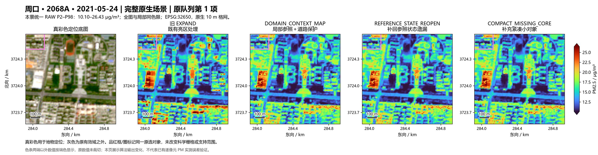

定位框放大
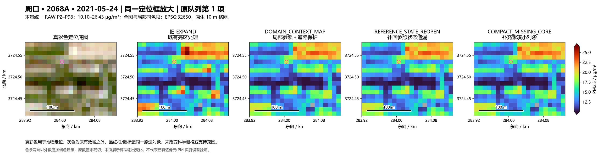

本景数值范围和变化位置
统一色限 10.098–26.433 μg/m³。新增方法相对 REFERENCE_STATE_REOPEN 共改变 9/10200 个原有效像元，最大降幅 1.238，全窗平均降幅 0.00035 μg/m³。原输入亮对象大于 25 像元的区域有 0/2226 个像元变化。
与 2026 年地图中心线相交的格网中，1 个发生变化，最大降幅 1.238 μg/m³。地图不是历史同期道路真值，也不提供真实路宽，交叠不等于已确认的道路损失。
大庆 · 1793A · 2021-06-17
大庆 1793A：框内小亮点温和下降，保留其周围的线状结构；没有把整片区域一起压低。
选定对象：1 像元；新增方法相对参照状态修正降低 0.731 μg/m³；相邻 3 像元范围均值变化 -0.000 μg/m³。
完整场景
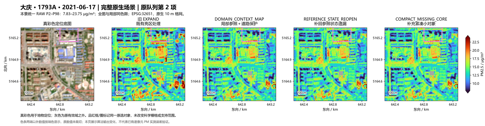

定位框放大
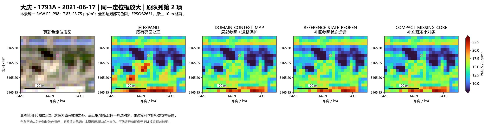

本景数值范围和变化位置
统一色限 7.830–23.747 μg/m³。新增方法相对 REFERENCE_STATE_REOPEN 共改变 17/10139 个原有效像元，最大降幅 1.958，全窗平均降幅 0.00140 μg/m³。原输入亮对象大于 25 像元的区域有 0/3393 个像元变化。
与 2026 年地图中心线相交的格网中，2 个发生变化，最大降幅 0.630 μg/m³。地图不是历史同期道路真值，也不提供真实路宽，交叠不等于已确认的道路损失。
济宁 · 1653A · 2021-05-24
济宁：该点位于连续浅色条带上，硬亮度阈值将它切成单像元对象。本次仍有小幅扣减，不能把它直接当成已确认的小屋顶改善。
选定对象：1 像元；新增方法相对参照状态修正降低 0.194 μg/m³；相邻 3 像元范围均值变化 -0.000 μg/m³。
完整场景
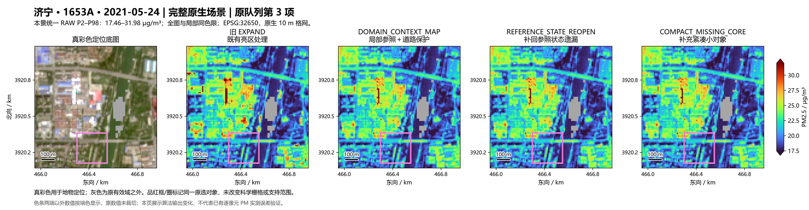

定位框放大
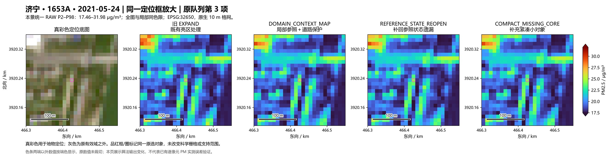

本景数值范围和变化位置
统一色限 17.456–31.982 μg/m³。新增方法相对 REFERENCE_STATE_REOPEN 共改变 14/9985 个原有效像元，最大降幅 1.448，全窗平均降幅 0.00057 μg/m³。原输入亮对象大于 25 像元的区域有 0/1679 个像元变化。
与 2026 年地图中心线相交的格网中，4 个发生变化，最大降幅 0.242 μg/m³。地图不是历史同期道路真值，也不提供真实路宽，交叠不等于已确认的道路损失。
阳泉 · 1742A · 2021-02-01
阳泉：选中对象细长，未通过新增紧凑形状条件，局部结果不变；保留这一没有改善的例子。
选定对象：9 像元；新增方法相对参照状态修正降低 -0.000 μg/m³；相邻 3 像元范围均值变化 -0.000 μg/m³。
完整场景
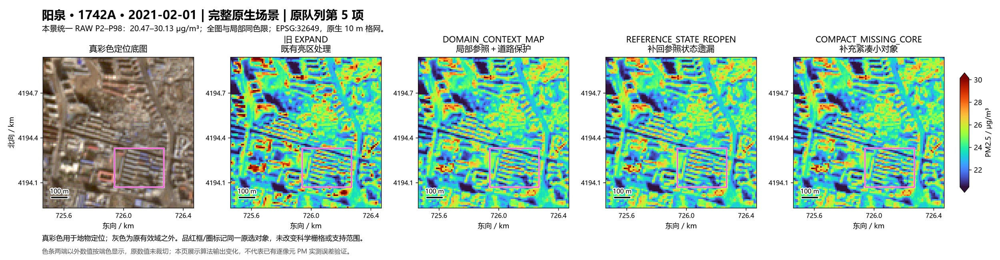

定位框放大
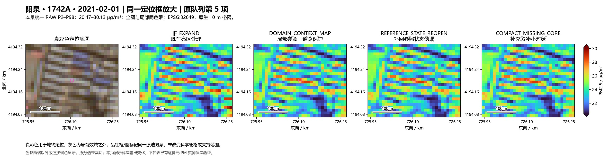

本景数值范围和变化位置
统一色限 20.475–30.132 μg/m³。新增方法相对 REFERENCE_STATE_REOPEN 共改变 9/10201 个原有效像元，最大降幅 1.589，全窗平均降幅 0.00071 μg/m³。原输入亮对象大于 25 像元的区域有 0/169 个像元变化。
与 2026 年地图中心线相交的格网中，0 个发生变化，最大降幅 0.000 μg/m³。地图不是历史同期道路真值，也不提供真实路宽，交叠不等于已确认的道路损失。
大庆 · 1791A · 2020-09-15
大庆 1791A：框内单像元亮点下降，附近大亮斑及空间轮廓基本保持。
选定对象：1 像元；新增方法相对参照状态修正降低 0.613 μg/m³；相邻 3 像元范围均值变化 -0.000 μg/m³。
完整场景
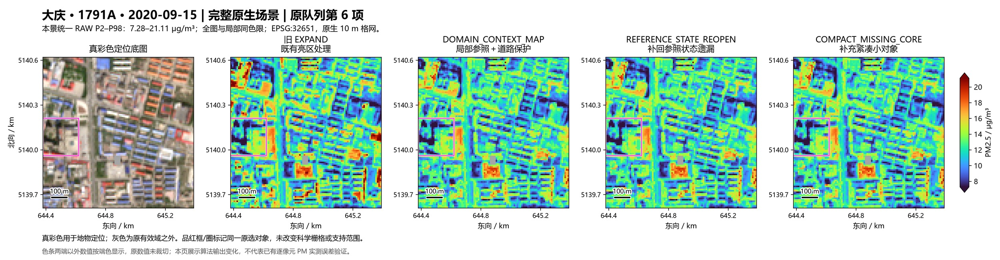

定位框放大
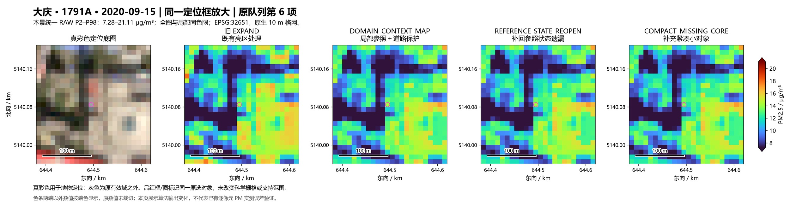

本景数值范围和变化位置
统一色限 7.279–21.106 μg/m³。新增方法相对 REFERENCE_STATE_REOPEN 共改变 26/10177 个原有效像元，最大降幅 1.952，全窗平均降幅 0.00270 μg/m³。原输入亮对象大于 25 像元的区域有 0/2604 个像元变化。
与 2026 年地图中心线相交的格网中，1 个发生变化，最大降幅 0.304 μg/m³。地图不是历史同期道路真值，也不提供真实路宽，交叠不等于已确认的道路损失。
永州 · 2478A · 2020-04-12
永州：选中对象呈长条状，未通过新增紧凑形状条件，保持原值；长条高值仍存在。
选定对象：19 像元；新增方法相对参照状态修正降低 -0.000 μg/m³；相邻 3 像元范围均值变化 -0.000 μg/m³。
完整场景
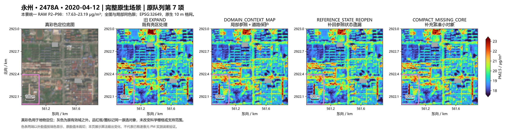

定位框放大
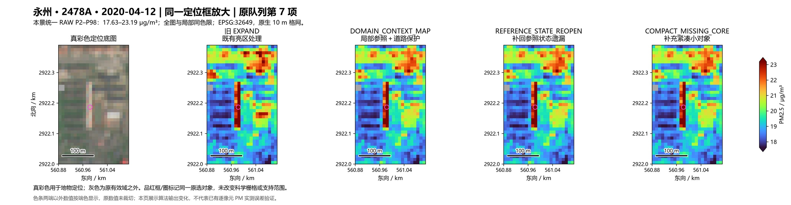

本景数值范围和变化位置
统一色限 17.632–23.186 μg/m³。新增方法相对 REFERENCE_STATE_REOPEN 共改变 12/10077 个原有效像元，最大降幅 1.018，全窗平均降幅 0.00077 μg/m³。原输入亮对象大于 25 像元的区域有 0/45 个像元变化。
与 2026 年地图中心线相交的格网中，5 个发生变化，最大降幅 1.018 μg/m³。地图不是历史同期道路真值，也不提供真实路宽，交叠不等于已确认的道路损失。